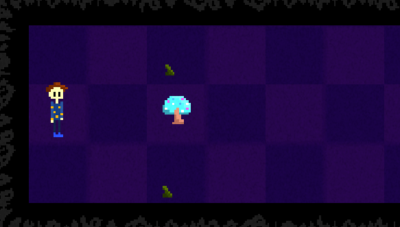

< back

- Title: Wake Me Up
- Medium: Unity, C#
- Date: 2020-2021
- Links:
Description
Wake Me Up is an experimental game that was developped during
the January of 2021, with the aim to be presented to
Vanier College's Launchbox competition.
This demo was developed to experiment on potential gameplays that
would be later used for a narrative-driven game that dealt with
sensitive
issues such as mental health.
However, the sole attempt of this demo was to try the gameplay only
without a specific narrative.
The main gameplay is designed to look a lot like a chess-puzzle
where each movement is immersed into the game's universe and
it requires planning to get to the objective.

Credits
- Programming - Sound Design: Kamyar Karimi
- Art: Helia Golmohammadi